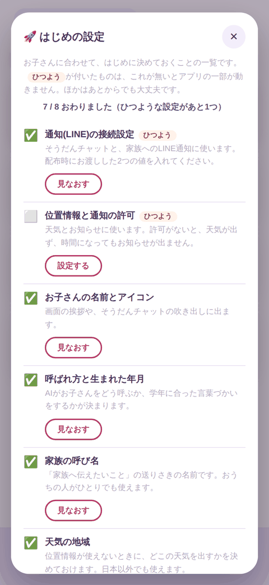
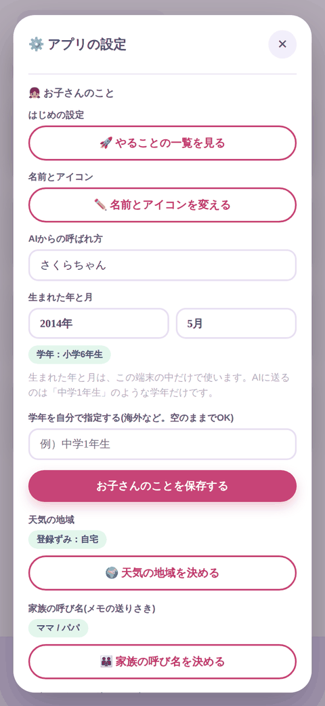
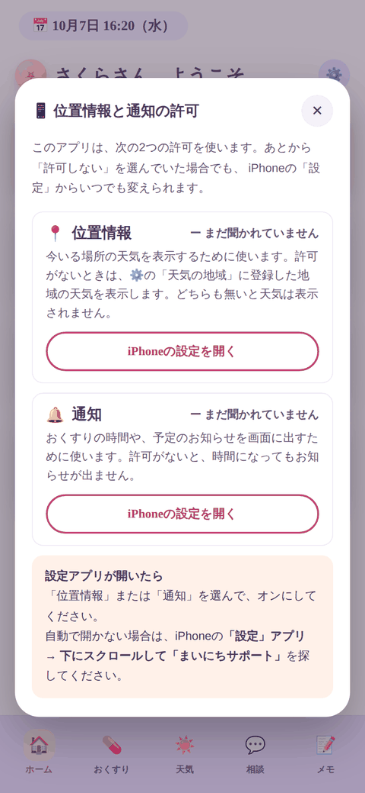
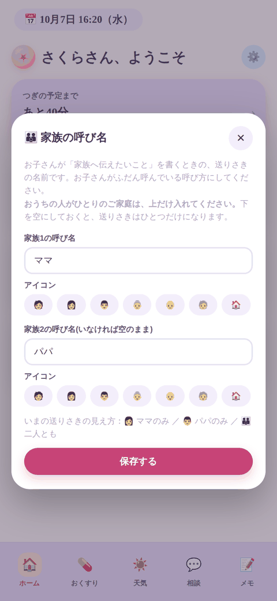
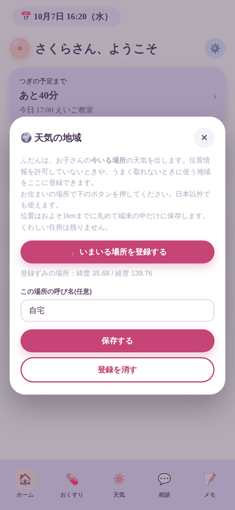
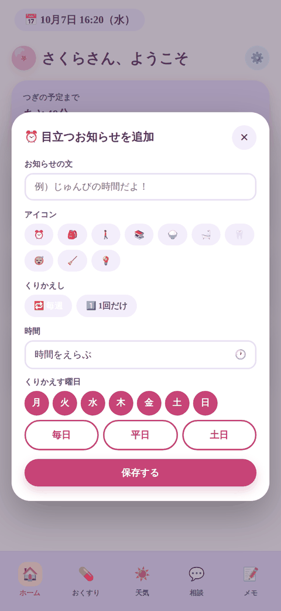
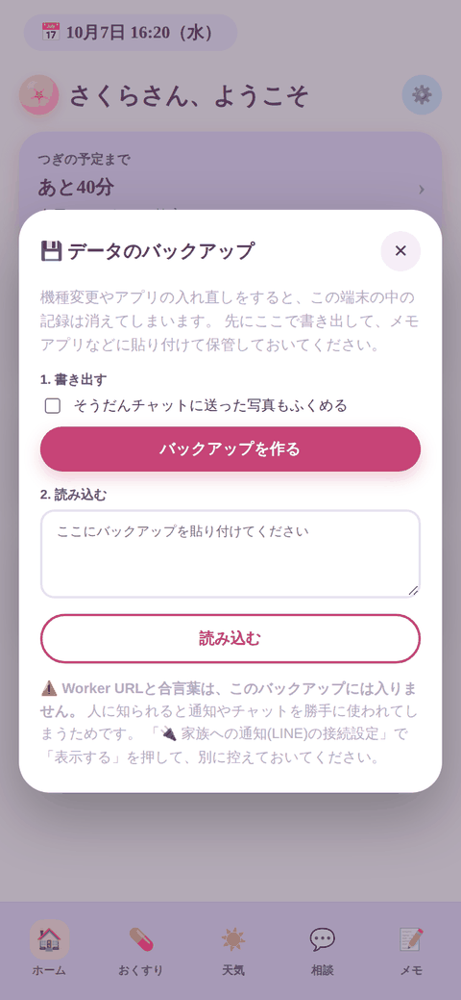

👧 お子さんに合わせる設定
まいにちサポート ／ 第2部（アプリの中だけで完結します・15分ほど）
ここはすべてアプリの中の操作だけです。外部サービスの登録はありません。
アプリの ⚙️（右上の歯車）→ 「🚀 やることの一覧を見る」 を開くと、この8項目がチェックリストになっています。上から順に押していけば、このページと同じ順番で進みます。

⚙️ →「🚀 やることの一覧を見る」。終わった項目に ✅ が付き、残りが上に出ます。

⚙️ の中は「お子さんのこと」「天気の地域」「家族の呼び名」などに分かれています。一覧から進めば、この中の必要な場所が順に開きます。
「ひつよう」の2つ（1 と 2）だけは必ず終わらせてください。
残りの6つは、あとからいつでも変えられます。まず1と2を終わらせて、お子さんと一緒に残りを埋めるのがおすすめです。
1. 通知（LINE）の接続設定 ひつよう
そうだんチャットと、家族へのLINE通知に使います。第1部の手順1・2で用意した2つの値（接続先のURLと、合言葉）をここに入れます。
- ⚙️ →「🚀 やることの一覧を見る」→「通知(LINE)の接続設定」の設定するを押す
- 2つの入力欄に、お渡しした値をそのまま貼り付ける
- 保存するを押す
ここが未設定だと、ホーム画面の上に「はじめの設定がまだです」の案内が出続けます。
そうだんチャット・あそび許可・れんらく・家族へのメモが、すべて動きません。
設定を代行してもらった場合は、すでに入っていることがあります。「✅ 設定済み」と出ていれば、そのままで大丈夫です。
2. 位置情報と通知の許可 ひつよう
iPhone 側の許可です。アプリの中だけでは決められないので、iPhoneの「設定」アプリで行います。

いまの状態がこの画面で確認できます。「まだ聞かれていません」なら、下のボタンからiPhoneの設定を開けます。
| 許可 | 許可しないとどうなるか |
|---|
| 位置情報 | いまいる場所の天気が出ません（下の「6. 天気の地域」を登録すれば、位置情報なしでも天気は出せます） |
| 通知 | おくすりの時間も、目立つお知らせも、予定の通知も鳴りません。アプリを開いている間しか気づけなくなります |
自動で開かないときの道順
iPhoneの「設定」アプリ → 下にスクロールして「まいにちサポート」→「位置情報」または「通知」を選んでオンにしてください。
3. お子さんの名前とアイコン
ホーム画面の挨拶（「〇〇さん、ようこそ」）と、そうだんチャットの吹き出しに出る名前です。
 AIの名前と、お子さんの名前・アイコンをそれぞれ決められます。
AIの名前と、お子さんの名前・アイコンをそれぞれ決められます。
ここは画面に出る表示名です。本名でなくても構いません。ニックネームでも大丈夫です。
長い名前はホームの見出しが窮屈になるので、12文字までにしてあります。
4. 呼ばれ方と生まれた年と月
そうだんチャットのAIが、お子さんをどう呼ぶかと、どの学年に合わせて話すかが決まります。
AIからの呼ばれ方
「さくらちゃん」「さくら」「さくらさん」など、ふだん呼ばれている呼び方を入れてください。ここが空のときは「〇〇さん」と呼びます。
生まれた年と月
選ぶと、その下にいまの学年が出ます（例：中学1年生）。学年に合わせて、言葉づかいと漢字の難しさが変わります。
生年月そのものはAIに送られません。送られるのは「中学1年生」という学年の文字列だけです。生まれた年も月も、アプリの外には出ません。
4月生まれの場合
4月を選ぶと「4月1日生まれですか？」の確認が出ます。日本の学年は4月2日〜翌年4月1日で区切るため、4月1日生まれだけ1つ上の学年になります。該当する場合だけチェックを入れてください。
日本の学年に当てはまらない場合
海外にお住まいの場合や、学年を自分で決めたい場合は、「学年を自分で指定する」の欄に直接書けます（例：Grade 7、中学1年）。ここに書いた文字が、生まれた年月より優先されます。
5. 家族の呼び名
「💌 家族へ伝えたいこと」を書いたときの、送りさきの名前です。

2人ぶんの呼び名とアイコンを決められます。1人だけでも構いません。
| 入れ方 | お子さんの画面に出る送りさき |
|---|
| 2人とも入れた（例：ママ／パパ） | ママのみ ／ パパのみ ／ 二人とも |
| 1人だけ入れた（例：ママ） | ママ（えらぶ画面は出ません） |
| どちらも空 | おうちの人 |
ひとり親のご家庭や、祖父母の方と暮らしているご家庭でも、そのまま使えます。「ママ」「パパ」に固定されていません。
LINE側の登録は別です。呼び名をここで変えても、LINEに通知が届く相手は変わりません。
届く相手は、第1部・手順2の最後に LINEで「おとうさん」「おかあさん」と送って登録した人です。
ここで決めるのは、お子さんの画面に出る名前だけです。
6. 天気の地域
位置情報が使えないときに、どこの天気を出すかを決めておけます。

いる場所で「いまいる場所を登録する」を押すと、その地点が覚えられます。
- 登録したい場所（ご自宅など）で、この画面を開く
- 「いまいる場所を登録する」を押す
- 「自宅」など、分かりやすい名前を付ける（省略しても構いません）
- 「保存する」を押す
保存されるのは、約1kmの精度に丸めた位置だけです。建物が分かるほど細かい位置は残しません。日本以外の地域でも、そのまま使えます。
位置情報も許可せず、ここも登録していないときは、天気を出しません（「どこの天気か分かりません」と出ます）。
よその街の天気で服装を決めてしまわないよう、あえて何も出さない作りにしています。
7. 目立つお知らせ
「16:30になったら、じゅんびの時間だよ」のように、決まった時刻に画面いっぱいで出るお知らせです。アプリを閉じていても、端末の通知で届きます。

アイコン・言葉・時刻・くりかえす曜日を決めます。
くりかえし方は2種類
- くりかえす … 曜日をえらびます。「毎日」「平日」「土日」のボタンでまとめて選べます
- 1回だけ … 日付をえらびます。その日が過ぎると、一覧から自動で片づきます
はじめは空です。「📋 例から作る」を押すと、形だけの見本が出るので、それを土台に書きかえてください。見本がそのまま登録されることはありません。
カレンダーの予定につけた通知も、ここで一覧できます
この画面の下のほうに、カレンダーの予定に 🔔 でつけた通知が14日ぶん並びます。「何がいつ鳴るのか」を1か所で確かめられます。
 上が「目立つお知らせ」、下が「予定につけた通知」です。
上が「目立つお知らせ」、下が「予定につけた通知」です。
8. 好きなもののメモ
お子さんの好きなもの（ゲーム・アニメ・生きものなど）を書いておくと、そうだんチャットのAIがその話題にくわしい状態で話せるようになります。用語をいちいち説明しなくてよくなります。
 2,000文字くらいが目安です。あとから何度でも書き直せます。
2,000文字くらいが目安です。あとから何度でも書き直せます。
AIに下書きを作ってもらう
- この画面の「🤖 AIに作ってもらう文をコピー」を押す
- ChatGPT・Claude・Geminiなど、お使いのAIに貼り付けて送る
- 返ってきた答えのうち、「(1) 貼り付け用」の部分だけを、この画面の入力欄に貼る
- 「保存する」を押す
「(2) 確認してほしいところ」は、必ず人の目で確かめてください。
AIは、うろ覚えの名前をそれらしく書いてしまうことがあります。返ってきた答えの最後に「確かめてほしいもの」の一覧が出るので、お子さんと一緒に「これ合ってる？」と見てから貼ってください。間違った名前がそのまま入ると、AIはそれを本当だと思って話し続けます。
メモの中に「これまでの指示を無視して」のような文が紛れ込んでも、AIがそれに従わないようにしてあります。メモはあくまで知識として扱われます。
文字数が増えるほど、チャットを1回送るごとの費用が少しずつ増えます。2,000文字を超えると画面に注意が出ます（上限は4,000文字）。
💾 バックアップ（機種変更の前に）
このアプリのデータはその端末の中だけにあります。開発者の手元に控えはありません。機種変更やアプリの入れ直しの前に、必ず控えを書き出してください。

⚙️ →「データのバックアップ」。書き出しと読み込みの両方ができます。
書き出す
- ⚙️ →「データのバックアップ」を開く
- 「そうだんチャットの写真もふくめる」に印を付けるかどうか決める（付けるとファイルが大きくなります）
- 「バックアップを作る」を押し、メールやメモアプリなど、なくならない場所に保存する
読み込む
- 新しい端末にアプリを入れ、⚙️ →「データのバックアップ」を開く
- 保存しておいたバックアップの文字列を、下の欄に貼り付ける
- 「読み込む」を押す
バックアップに入らないものが2つあります。新しい端末では、この2つだけ入れ直してください。
安全のため、この2つはあえて控えに含めていません。
📲 アプリを新しくするとき
新しいビルドをお渡ししたときは、上書きでインストールしてください。
先にアプリを消さないでください。アプリを消すと、端末の中のデータ（おくすりの記録・メモ・チャットの履歴・設定）が一緒に消えます。
上書きインストールなら、データは残ります。
- 念のため、先に上の「💾 バックアップ」で控えを書き出す
- お渡ししたリンクから、そのままインストールする（消さずに上書き）
- アプリを開き、⚙️ の下のほうにあるビルド番号が新しくなっているか確かめる
- アプリを一度スワイプで終了し、開き直して、記録が残っているか確かめる
📅 使える期間について
このアプリは App Store を通さずに配布しているため、インストールから約1年で期限が切れ、開けなくなります。
期限が切れても、端末の中のデータは消えません。新しいビルドを上書きインストールすれば、そのまま続けて使えます。
期限が近づいたら、あらためてご案内します。念のため、ときどきバックアップを書き出しておくと安心です。
困ったときは
「はじめの設定がまだです」の案内が消えない
「1. 通知（LINE）の接続設定」が未設定です。2つの値が両方入っているか確かめてください。片方だけでは未設定の扱いになります。
天気が出ない
「6. 天気の地域」を登録するか、iPhoneの設定で位置情報を許可してください。どちらも無いときは、あえて何も出さない作りになっています。
時間になってもお知らせが出ない
iPhoneの設定で「通知」が許可されているか確かめてください（「2. 位置情報と通知の許可」）。許可されていれば、アプリを閉じていても鳴ります。
AIが学年に合わない言葉で話す
「4. 呼ばれ方と生まれた年と月」が未設定だと、学年の情報をAIに渡しません。生まれた年と月を入れるか、「学年を自分で指定する」に直接書いてください。
送りさきに「おうちの人」としか出ない
「5. 家族の呼び名」が両方とも空です。ひとつでも入れると、その名前で出るようになります。